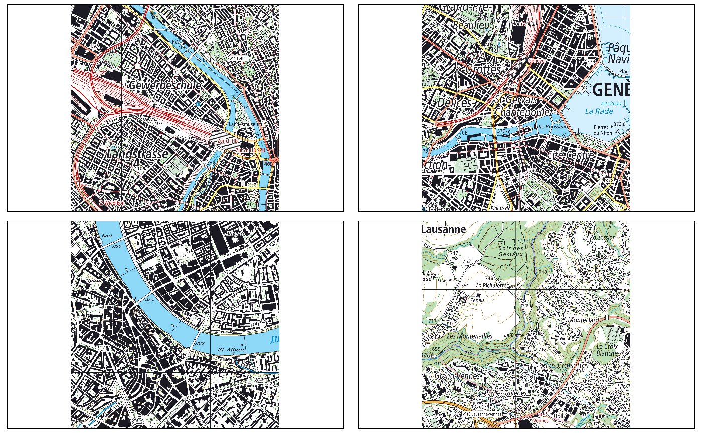

Important notice
I’m currently the only one using this package. Things break freaquently and there is absolutly no backwards compatibility. Please tell me if you are planing to use this package so I will take greater care!
Aquire raster data
In a firs step, the raster maps need to be acquired and stored in a folder. Unfortunately, most of the swisstopo raster maps are behind a paywall if you aren’t part of geodata4edu. Two scales are available publicly for free (see #1):
The package is developed with a strong focus on the swisstopo raster maps and hasn’t been tested with other data. Therefore, only CRS 2056 and CRS 21781 are implemented.
Data structure
Create one folder for each maptype, scale and projection. Each folder is then named MAPTYPE_SCALE_PROJECTION (e.g. PK_25_2056). Check the function fdir_init to get more details on the requirements for naming the folders.
Some metadata must be derived from the filename. In order to achieve this, create a text file in each folder and change the file name of that textfile to match the naming pattern on the files within the folder. For example, the 1:500’000 raster map has the filename: ‘PK500_LV95_KGRS_500_2016_1.tif’. The filestructure and the corresponding “.pattern”-File should therefore look as follows:
Geodata/
├── PK_500_2056/
│ ├── PK500_LV95_KGRS_500_2016_1.tif
│ ├── AABBB_CCCC_DDDD_EEE_FFFF_G.patternCall search_pattern() to see the associated naming schema (i.e. the placeholders and their meanings). The function metainfo_from_filename is called on the filenames.
Note:
- The character length of the naming pattern must match the length of the filename. In this way, different naming patterns can exist within a single folder.
- The naming pattern currently can’t handle variable lenghts
Scan Folder
Next, run the command fdir_init() pointing to the location (parent folder) of these maps. This command creates a “File Directory” in the package environment by scanning all folders recursively and analyzing the content. All files ending with “tif” are checked for extent, number of layers and resolution. All the mentioned attributes of each raster file, along with the file path and the extent as a geometry, are stored in the variable fdir of the package environment.
fdir_init stored an sf object in the package’s own environment (called packageEnv). It’s a list of all raster files, stored with their extent, scale, resolution and other information (see fdir_init()).
## [1] "fdir" "search_pattern_dict"Retrieve single raster
Now let’s look at an example where this package actually comes to some use. Say you want to plot a map of the largest cities in Switzerland. There is a sample dataset included in the package with name, location and size of the 10 largest cities in Switzerland.
## # A tibble: 10 x 3
## NAME EINWOHNERZ geometry
## <chr> <int> <list>
## 1 Zürich 402762 <S3: XY>
## 2 Genève 198979 <S3: XY>
## 3 Basel 171017 <S3: XY>
## 4 Lausanne 137810 <S3: XY>
## 5 Bern 133115 <S3: XY>
## 6 Winterthur 109775 <S3: XY>
## 7 Luzern 81592 <S3: XY>
## 8 St. Gallen 75481 <S3: XY>
## 9 Lugano 63932 <S3: XY>
## 10 Biel/Bienne 54456 <S3: XY>We can plot a simple map using the sample data already demonstrated:
library(tmap)
tm_shape(switzerland) +
tm_polygons() +
tm_shape(sample_points) +
tm_dots(size = "EINWOHNERZ")
Now if you would want to include a swiss raster map into this plot you would:
- first decide on a scale
- look for the relevant map numbers based on the division (“Blatteinteilung”)
- find the appropriate raster map files based on the map numbers from the previous step
- import raster into
R - check raster resolutions and possibly resample all rasters to same resolution
- merge all the relevant raster maps into a single file
- possilbly reassign
CRSandcolormap
This package automates steps 2 - 7 with the function get_raster(). The function takes an sf object as an input. In addition, scale level (a scale 1:1’000’000 is defined as scale = 1000).
## Using scale level: 1000
Retrieve multiple rasters
In the previous example, little was gained using the get_raster function. The function get’s much more useful when multiple raster are needed.
## Using scale level: 25credits <- "Geodata \u00A9 Swisstopo"
tm_shape(rastermap) +
tm_raster() +
tm_credits(credits,bg.color = "white",bg.alpha = 0.8)